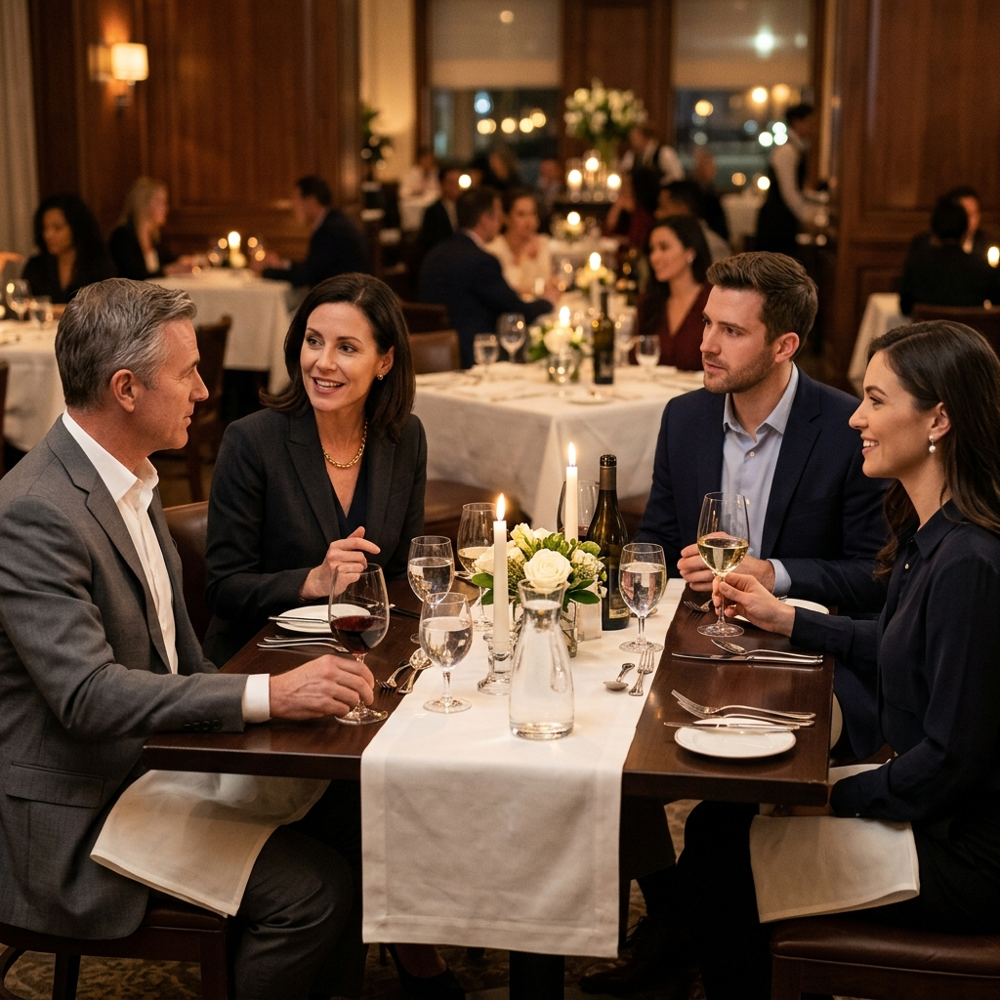

Polishing professional dining and etiquette skills
I never thought much about table manners before this session. To be honest, I always saw eating as just a normal everyday thing — something you do to get full. I did not think it had anything to do with being professional.
But this session changed the way I see it. It showed me that how you eat at a business meal says a lot about your character. People around the table are watching how you handle yourself — and they are forming opinions about you, even without realizing it.
Business meals are not just about eating. They are about building relationships, creating trust, and showing respect. I left this session feeling like I had learned something I will use for the rest of my career.
🍽️Why Dining Etiquette Matters in 2025
I learned that the dining table is a powerful setting for business deals, interviews, networking, and personal events. The session showed me why good table manners are a critical 21st-century skill for my career:
First Impressions Count
I learned it takes only 7 seconds to form a first impression. Dining confidently and respectfully will set me apart instantly.
Career & Networking Edge
I realized business meals are highly common, and knowing dining etiquettes prepares me for professional lunches and client dinners.
Cultural Awareness & Respect
I learned that proper table manners demonstrate my respect for the host, fellow diners, and the preparation behind the meal.
Confidence & Ease
I realized that when I don't have to worry about which fork to use, I can focus entirely on building relationships and table talk.
🍽️Reading the Table Setting
I used to find a formal table setting intimidating, but the lecturer showed us it is structured logically. I learned these simple rules to navigate any table setting:
- BMW Rule: **B**read (on my left), **M**eal (in the center), **W**ater/Beverages (on my right). I will use this to avoid drinking from my neighbor's glass.
- Outside In: I learned to use utensils starting from the outermost set and work my way inward with each subsequent course.
- Hold the Wine Glass: The session showed me to always hold a wine glass by the **stem**, not the bowl, to keep the beverage at the proper temperature and avoid fingerprints.
- Table Navigation: I learned to pass items (like salt and pepper) to the right, and to always pass salt and pepper together as a pair.
🧣The Art of the Napkin
I learned that the napkin is the first item I interact with and serves as a major indicator of my dining manners.
✅ How I Should Use It
✔ I will unfold it and place it on my lap as soon as I sit down.
✔ I should fold large napkins in half, keeping the fold towards my waist.
✔ I must use the inner corners to gently dab my mouth.
✔ I will place it on my chair if I leave the table temporarily.
✔ I will place it loosely folded to the left of my plate when the meal ends.
❌ What I Must Avoid
✘ I must not tuck the napkin into my collar, belt, or waistband.
✘ I should avoid shaking it open dramatically or waving it around.
✘ I will never use the napkin to wipe my nose or clean the cutlery.
✘ I should not leave it crumpled, balled up, or thrown on my plate.
🍴Utensil Mastery
I learned that there are two primary styles of dining with a knife and fork, and both are fully acceptable in professional settings:
American Style (Switch Style)
I learned to hold the fork in the left hand and the knife in the right hand to cut, then place the knife down and switch the fork to my right hand to eat, with the fork tines facing upward.
Continental Style (European Style)
I learned to hold the fork in the left hand and the knife in the right hand, cutting and eating without switching hands, while the fork tines remain facing downward throughout.
Utensil Signaling I Will Use:
-
1
Resting Position: To signal I am still eating, I will cross the knife and fork on my plate in an inverted 'V' shape.
-
2
Finished Position: To signal I am finished, I will place my knife and fork parallel to each other, pointing to the 10:20 clock position, with the blade facing inward.
🥗Eating Technique, Pace, & Phone Etiquette
I realized that how I behave during the meal is as important as how I hold my utensils:
- Pace Myself: I will align my eating speed with my host or companions, and make sure I never eat too fast or finish long before others.
- Chewing: I should always chew with my mouth closed, never speak with food in my mouth, and cut my food into small, bite-sized pieces.
- Soup Rules: I learned to spoon soup away from myself and sip from the side of the spoon, making sure not to slurp or blow on the soup.
- Phone-Free Table: I will keep my phone off the table and on silent, excusing myself to step away only if I must take an urgent call.
- Handling Awkward Situations: If I drop a utensil, I will not crawl to pick it up; instead, I will ask the server for a replacement. If I have food in my teeth, I'll handle it in the restroom.
🍷Ordering with Confidence
I learned these 6 steps to order professionally when dining with clients or hosts:
-
1
Follow the Host's Lead: I will let the host recommend items or order first, which gives me a clue about the appropriate price range and courses.
-
2
Avoid Messy Foods: I should steer clear of hard-to-eat items like spaghetti, lobsters, or wings, and select foods that can be eaten cleanly.
-
3
Keep Orders Simple: I will avoid making complex modifications to my menu items unless I have a strict allergy.
-
4
Be Polite to Staff: I realized how I treat the service staff is a direct reflection of my character. I will always use "please" and "thank you."
-
5
Pace and Conversation: Since the primary purpose of a business meal is conversation, I will avoid ordering heavy dishes.
-
6
Table Talk: I will discuss light, engaging topics (like hobbies or travel) and make sure to avoid controversial topics like politics or religion.
🌟Informal vs Formal Dinners & Cultural Nuances
I learned that dining styles vary depending on the setting and global cultures:
Informal Dining
I learned that even in casual dining in family homes or popular restaurants, basic manners (like keeping my napkin on my lap and chewing closed) still apply.
Formal Multi-Course Dining
I realized that formal dining involves structured protocols and multiple courses where strict adherence to utensil rules is expected of me.
Global Nuances: I was fascinated to learn about global nuances, like eating with the right hand in South Asia. I will make sure to research cultural dining norms before traveling.
My Reflection
I'll be honest—I used to think dining etiquette was just for fancy people in old movies. I didn't think it mattered how I ate as long as I got full! But this session showed me that how I behave at a dining table actually tells people a lot about my character. If I'm messy or on my phone during a business lunch, it makes me look unprofessional.
Now, I feel much better about going to a professional dinner. I know the basic rules, like where to put my napkin and how to use the cutlery from the outside in. These are simple things, but they give me a lot of confidence. I'm glad I learned this now so I can practice before I start going to real job networking events.
✨ Key Takeaway
The way you carry yourself at the dining table is a mirror of how you carry yourself in life — good manners are never just about food, they are about who you are.